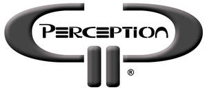

Trade Mark Journal No.2025/013 28 March 2025
UK00004170685 7 March 2025 (11,35,37,38,41,43)

- Class 11
- Outdoor lighting; Decorative lighting; LED lighting installations.
- Class 35
- Organisation of promotions using audiovisual media; Audio-visual displays for advertising purposes (Preparation or presentation of -); Promotional marketing services using audiovisual media; Sales promotion using audiovisual media; Preparation of audio and/or visual displays for businesses; Event marketing; Video recordings for marketing purposes (Production of -); Production of video recordings for marketing purposes.
- Class 37
- Installation of audiovisual equipment; Advisory services relating to the installation of audiovisual equipment; Installation of electronic conferencing equipment and facilities; Hire of stagings.
- Class 38
- Broadcasting of audiovisual and multimedia content via the Internet; Streaming of audio, visual and audiovisual material via a global computer network; Audio broadcasting.
- Class 41
- Entertainment services provided at a race track; Entertainment services provided at a motor racing circuit; Rental of audio-visual apparatus; Audio-visual display presentations; Audio-visual display presentation services for entertainment purposes; Audio-visual display presentation services for educational purposes; Audio, video and multimedia production, and photography; Production of audio entertainment; Arranging of visual and musical entertainment; Rental of audio equipment; Audio entertainment services; Audio and video production, and photography; Production of sporting events; Production of esports events; Production of live entertainment events; Organization, production and presentation of theatrical performances; Organisation, production and presentation of theatrical performances; Show production services; Production of stage shows; Video production; Production of shows; Live show production services; Production of live performances; Audio production; Sporting event organization; Video production services; Entertainment services by stage production and cabaret; Special event planning; Production of live entertainment; Audio production services; Rental of stage lighting equipment; Hire of theatre scenery; Video equipment hire; Hire of stage scenery; Hire of televisions; Hire of film projectors; Rental of stage lighting controls; Hire of equipment for games; Lighting technician services for events; Rental of lighting apparatus for theatre.
- Class 43
- Rental of lighting apparatus; Hiring of furniture.
Patrick O'Donnell